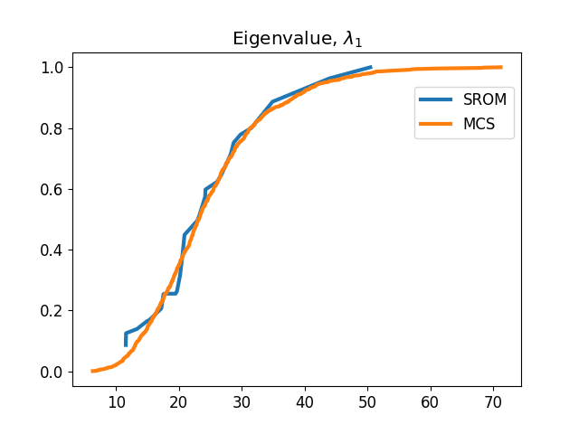
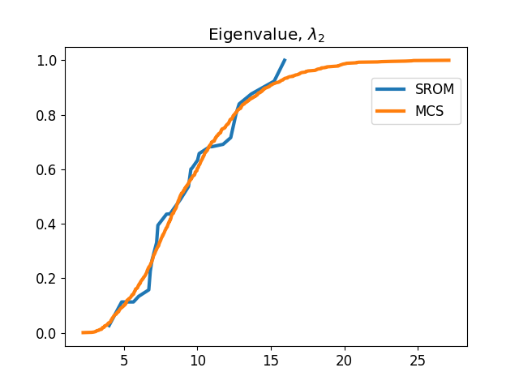
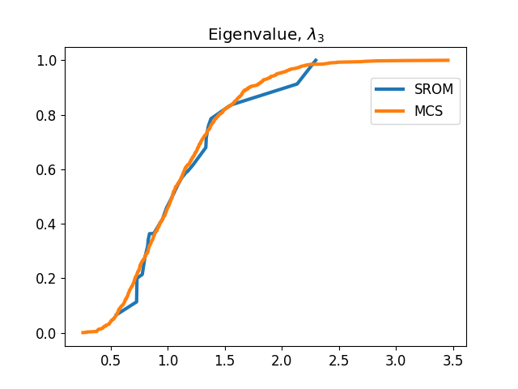

Note
Go to the end to download the full example code. or to run this example in your browser via Binder
SROM on the eigenvalues of a system
In this example, Uncertainty in eigenvalues of a system is studied using SROM and it is compared with the
Monte Carlo Simulation results. Stiffness of each element (i.e. k1, k2 and k3) are treated as random variables which
follows gamma distribution. SROM is created for all three random variables and distribution of eigenvalues are
identified using SROM.
Import the necessary libraries. Here we import standard libraries such as numpy and matplotlib, but also need to
import the MonteCarloSampling, TrueStratifiedSampling and SROM class from UQpy.
import shutil
from UQpy import PythonModel
from UQpy.sampling import MonteCarloSampling, TrueStratifiedSampling
from UQpy.sampling import RectangularStrata
from UQpy.distributions import Gamma
from UQpy.surrogates import SROM
from UQpy.run_model.RunModel import RunModel
from scipy.stats import gamma
import numpy as np
import matplotlib.pyplot as plt
Create a distribution object for Gamma distribution with shape, shift and scale parameters as \(2\),
\(1\) and \(3\).
Create a strata object.
strata = RectangularStrata(strata_number=[3, 3, 3])
Using UQpy TrueStratifiedSampling class to generate samples for two random variables having Gamma
distribution.
x = TrueStratifiedSampling(distributions=marginals, strata_object=strata, nsamples_per_stratum=1)
Run SROM to minimize the error in distribution, first order and second order moment about origin.
Plot the sample sets and weights from SROM class. Also, compared with the CDF of gamma distribution of k1.
# Arrange samples in increasing order and sort samples accordingly
com = np.append(y.samples, np.transpose(np.matrix(y.sample_weights)), 1)
srt = com[np.argsort(com[:, 0].flatten())]
s = np.array(srt[0, :, 0])
a = srt[0, :, 3]
a0 = np.array(np.cumsum(a))
# Plot the SROM approximation and compare with actual gamma distribution
l = 3
fig = plt.figure()
plt.rcParams.update({'font.size': 12})
plt.plot(s[0], a0[0], linewidth=l)
plt.plot(np.arange(3, 12, 0.05), gamma.cdf(np.arange(3, 12, 0.05), a=2, loc=3, scale=1), linewidth=l)
plt.legend(['SROM Approximation', 'Gamma CDF'], loc=5, prop={'size': 12}, bbox_to_anchor=(1, 0.75))
plt.show()
Run the model ‘eigenvalue_model.py’ for each sample generated through TrueStratifiedSampling class. This
model defines the stiffness matrix corresponding to each sample and estimate the eigenvalues of the matrix.
m = PythonModel(model_script='local_eigenvalue_model.py',model_object_name="RunPythonModel" )
model = RunModel(model=m)
# model = RunModel(model_script='local_eigenvalue_model.py')
model.run(samples=y.samples)
r_srom = model.qoi_list
MonteCarloSampling class is used to generate 1000 samples.
x_mcs = MonteCarloSampling(distributions=marginals, nsamples=1000)
Run the model ‘eigenvalue_model.py’ for each sample generated through MonteCarloSampling class.
model.run(samples=x_mcs.samples, append_samples=False)
r_mcs = model.qoi_list
Plot the distribution of each eigenvalue, estimated using SROM and MonteCarloSampling weights.
# Plot SROM and MCS approximation for first eigenvalue
r = np.array([x[:,0] for x in r_srom])
r_mcs = np.squeeze(np.array(r_mcs))
com = np.append(np.atleast_2d(r), np.transpose(np.matrix(y.sample_weights)), 1)
srt = com[np.argsort(com[:, 0].flatten())]
s = np.array(srt[0, :, 0])
a = srt[0, :, 1]
a0 = np.array(np.cumsum(a))
fig1 = plt.figure()
plt.plot(s[0], a0[0], linewidth=l)
r_mcs0 = r_mcs[np.argsort(r_mcs[:, 0].flatten())]
plt.plot(r_mcs0[:, 0], np.cumsum(0.001*np.ones([1, 1000])), linewidth=l)
plt.title('Eigenvalue, $\lambda_1$')
plt.legend(['SROM', 'MCS'], loc=1, prop={'size': 12}, bbox_to_anchor=(1, 0.92))
plt.show()
# Plot SROM and MCS approximation for second eigenvalue
r = np.array([x[:,1] for x in r_srom])
com = np.append(np.atleast_2d(r), np.transpose(np.matrix(y.sample_weights)), 1)
srt = com[np.argsort(com[:, 0].flatten())]
s = np.array(srt[0, :, 0])
a = srt[0, :, 1]
a0 = np.array(np.cumsum(a))
fig2 = plt.figure()
plt.plot(s[0], a0[0], linewidth=l)
r_mcs0 = r_mcs[np.argsort(r_mcs[:, 1].flatten())]
plt.plot(r_mcs0[:, 1], np.cumsum(0.001*np.ones([1, 1000])), linewidth=l)
plt.title('Eigenvalue, $\lambda_2$')
plt.legend(['SROM', 'MCS'], loc=1, prop={'size': 12}, bbox_to_anchor=(1, 0.92))
plt.show()
# Plot SROM and MCS approximation for third eigenvalue
r = np.array([x[:,2] for x in r_srom])
com = np.append(np.atleast_2d(r), np.transpose(np.matrix(y.sample_weights)), 1)
srt = com[np.argsort(com[:, 0].flatten())]
s = np.array(srt[0, :, 0])
a = srt[0, :, 1]
a0 = np.array(np.cumsum(a))
fig3 = plt.figure()
plt.plot(s[0], a0[0], linewidth=l)
r_mcs0 = r_mcs[np.argsort(r_mcs[:, 2].flatten())]
plt.plot(r_mcs0[:, 2], np.cumsum(0.001*np.ones([1, 1000])), linewidth=l)
plt.title('Eigenvalue, $\lambda_3$')
plt.legend(['SROM', 'MCS'], loc=1, prop={'size': 12}, bbox_to_anchor=(1, 0.92))
plt.show()
- 
- 
- 
Note: Monte Carlo Simulation used 1000 samples, whereas SROM used 27 samples.
Total running time of the script: (0 minutes 4.129 seconds)